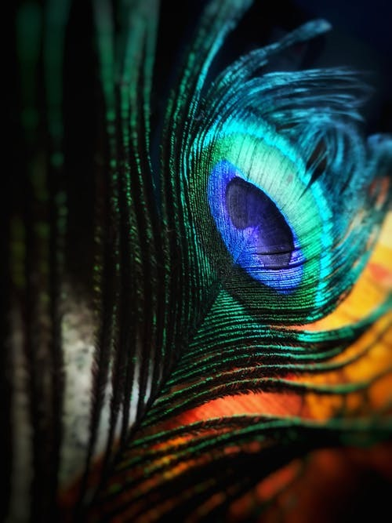

Realtime Image Identification
Testing images with google lens and mobile net
Testing images with google lens and mobile net

Output on Google lense
Painting
Output on Mobilenet
Ocean
Result-Google lens is more accurate

Output on Google lense
feather
Output on Mobilenet
leaf
Result-Google lens is more accurate